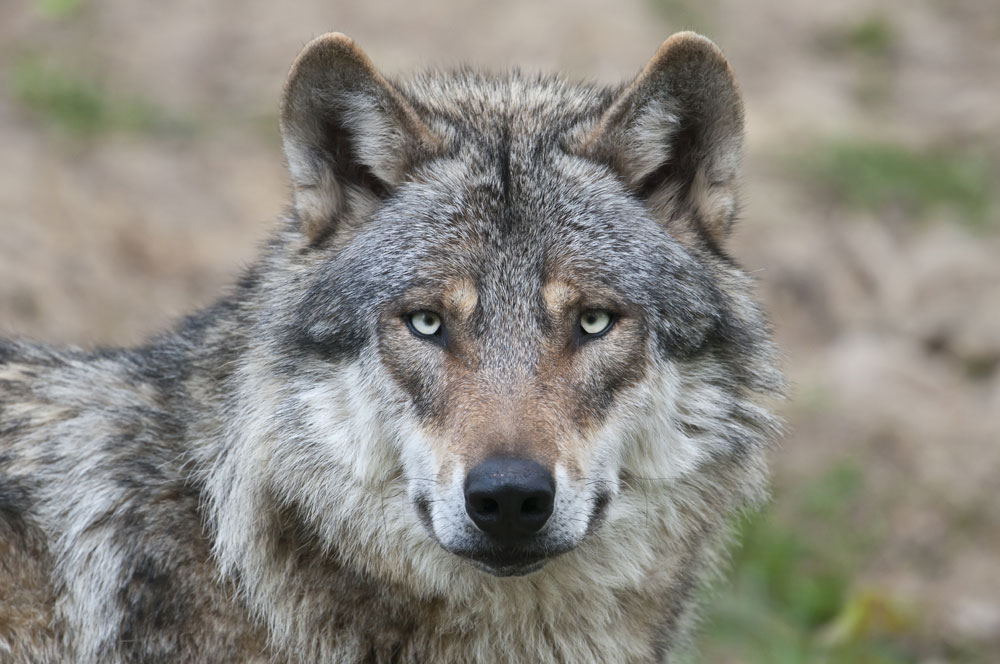

Sudet ovat koira eläimiin kuuluvia nisäkkäitä. sudet of suurimpia villikoiria koko maailmassa ja erittäin sosiaalisia eläimiä. Ne elävät perheyksiköistä muodostuneessa laumassa,. Suomen susi kanta on noin 279-321 yksilöä ja laumoja 32-38. sudet myös kommunikoivat toistensa kanssa käyttäen eri asentoja, eleitä, ilmeitä, hajumerkeillä ja ulvomalla. Ulvonta susille merkitsee montaa eri asiaa, saalistamiseen lähtöä, reviirin vartioimista tai lauman koolle kutsumista.
